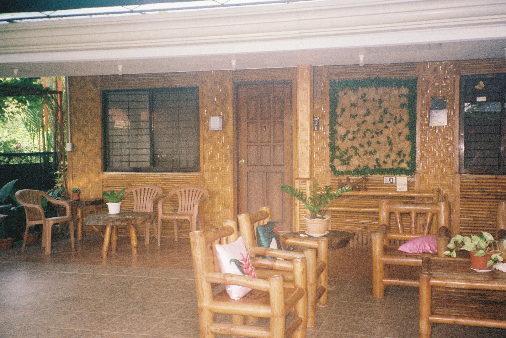

<!DOCTYPE html>
<html lang="en">
<head>
    <meta charset="UTF-8">
    <meta name="viewport" content="width=device-width, initial-scale=1.0">
    <title>PROJECT 001</title>
    <link rel="stylesheet" type="text/css" href="P1 STYLE.css">
    <html>

    
</head>
<body>
    </html>
    </head>
    <body>
        <body>
            <div><container:>
                <div class="navbar">
                    <nav>
                        <ul>
                          <a href="index.html">HOME PAGE</a>
                          <a href="project1.html">PROJECT 001</a>
                          <a href="project2.html">PROJECT 002</a>
                          <a href="project3.html">PROJECT 003</a>
                          <a href="create.html">GALLERY</a>
                        </ul>
                    </nav>
                </div>
    </nav


</body>
</html>

<!DOCTYPE html>
<html>
<head>
<style>
* {
  box-sizing: border-box;
}

body {
  font-family: 'Yantramanav', sans-serif;
  padding: 10px;
  background: #3E3122;
}

.header h1 {
  font-size: 50px;
}

/* Left column */
.leftcolumn {   
  float: left;
  width: 50%;
}

/* Right column */
.rightcolumn {
  float: left;
  width: 50%;
}


</style>
</head>
<body>

<div class="header">
    <h1>PROJECT 001</h1> 
    <h3>JUNE - JULY, 2023</h3>
    <p> Summer of Dapitan, Philippines shot on film.</p>


    <div class="scroll-container">
      
      
      
      
      
      
      
      
      
      
      
      
      
      
      
    </div>

    <div class="text">
      <h2>KODAK PORTRA 400 ON PENTAX ESPIO 738</h2> 
      <h3>This series of photos were shot on an Pentax Film camera using 35mm film. </h3>
      <p> From June to July, I spent my summer in the Philippines visiting my mum's hometown Dapitan.
          The journey consisted of hour long drives learning about her culture, my family's history, the history of 
          the Philippines and experiencing things for the first time.</p>

     </p>Dapitan is historically significant because it is where national hero Jose Rizal was exiled
         during the Spanish colonial period. The city has preserved many Rizal-related sites, including 
         the Rizal Shrine, as seen in some of the photos below.</p>


  


    <div class="row">
      <div class="column">
        
        
        
      </div>
      <div class="column">
        
        
        
      </div>

